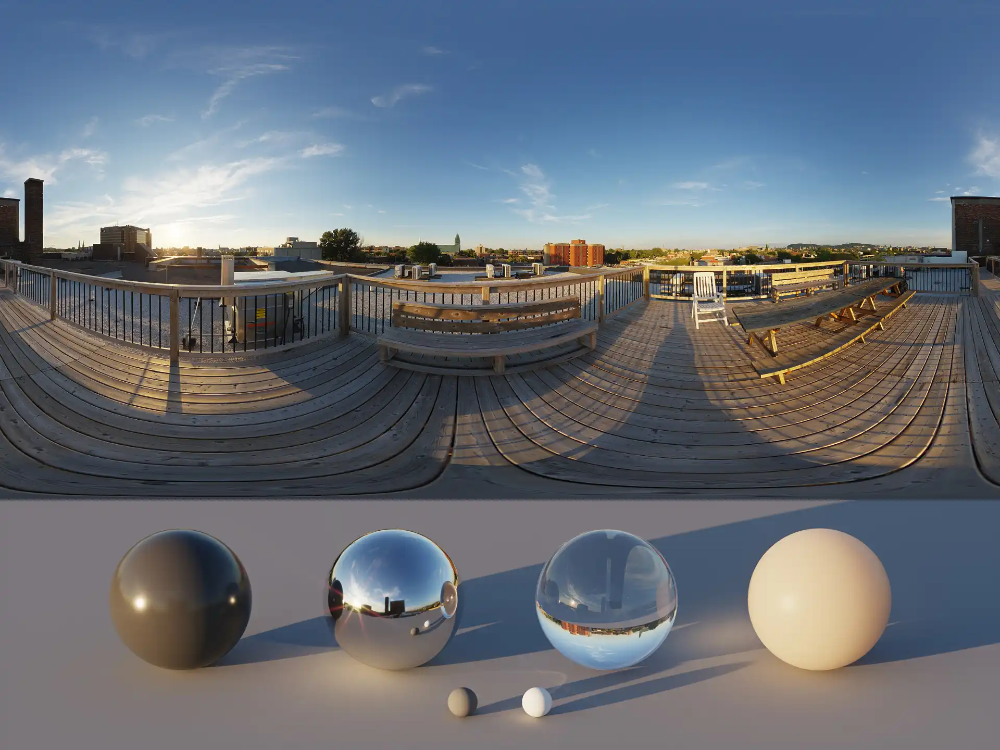
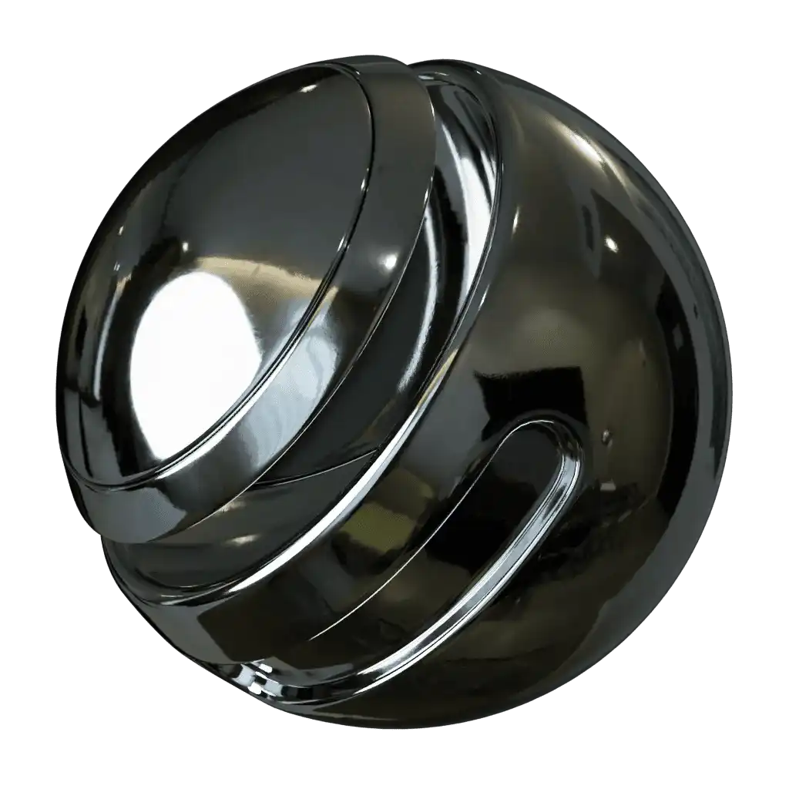
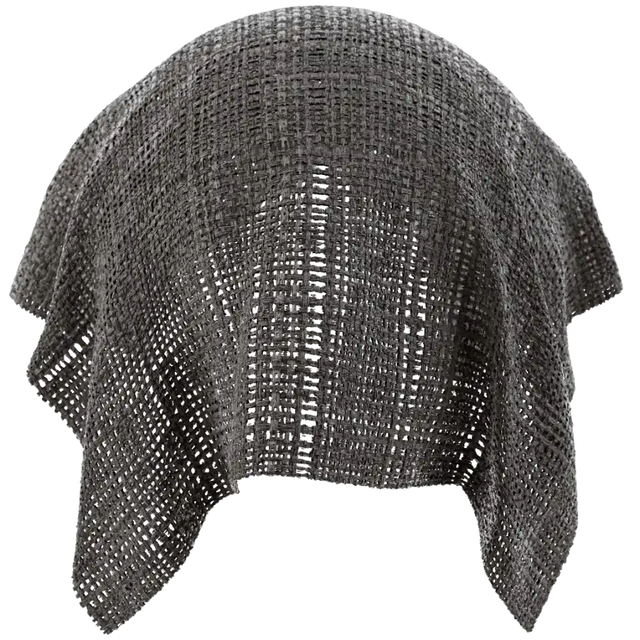
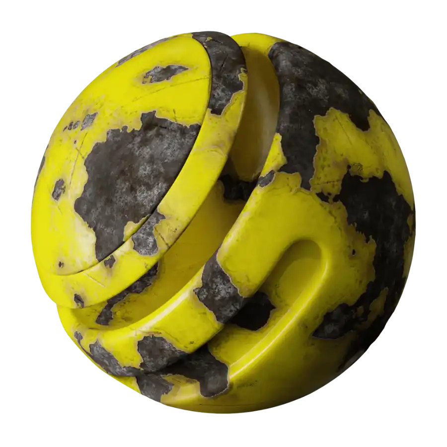
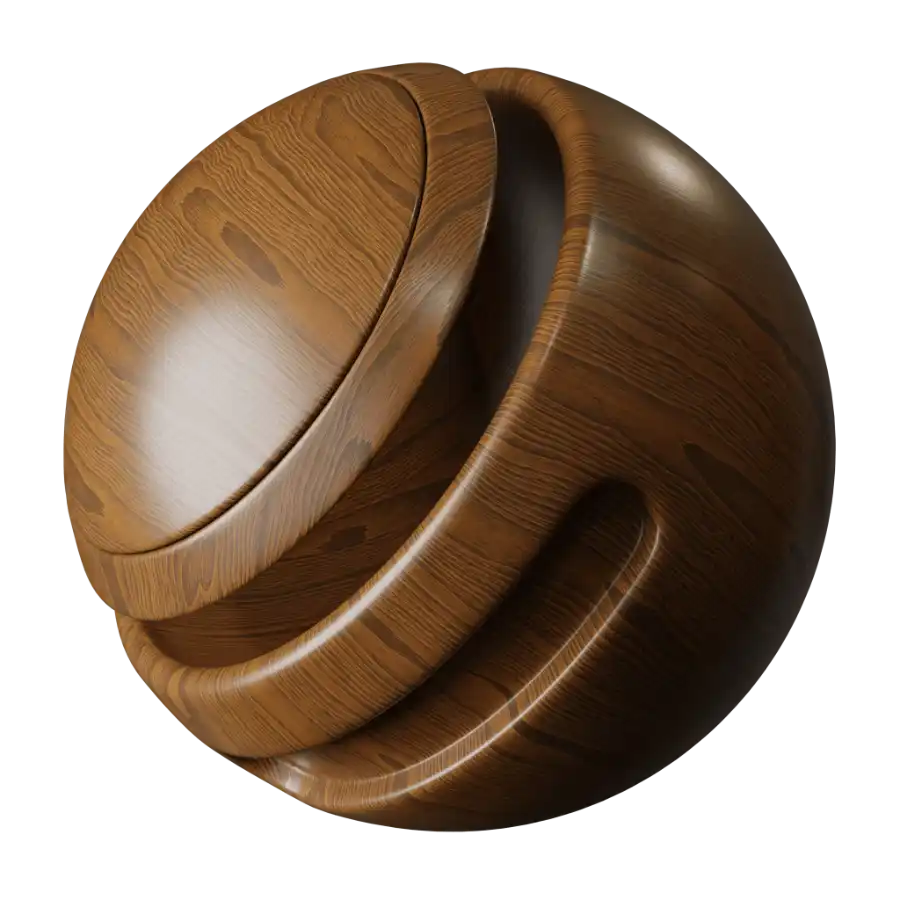
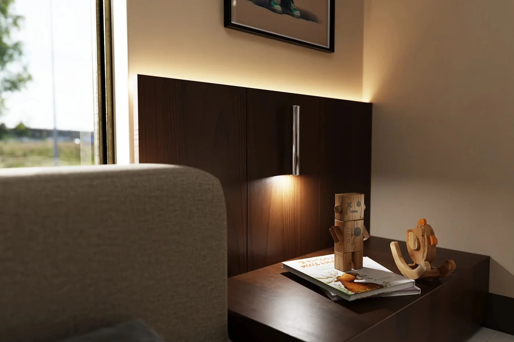

A convincing render should make a viewer pause. At first glance, it may look like a photograph of a
completed interior,
rather than an image of a space that has not yet been built. Achieving that response takes more than placing
furniture
in a digital room. It depends on a careful balance of technical precision and artistic judgment.
The most realistic renders are built around the details people naturally recognise, even when they do not
consciously
notice them. The softness of daylight on a wall, the gentle reflection in a timber floor, the folds in
fabric, and the
small variations in stone all help make a digital space feel lived in and credible.
Light creates the mood—and the realism
Lighting is often the single biggest difference between an ordinary render and a believable one. In real
interiors,
light is never perfectly flat. It changes throughout the day, falls differently across surfaces, and creates
depth
through shadows, reflections, and contrast.
A well-crafted render considers the direction and quality of light. Morning sunlight may create crisp,
gentle shadows,
while an overcast afternoon produces softer illumination. Interior lighting also matters: warm lamps,
concealed LEDs,
pendants, and wall lights should each contribute to the room’s atmosphere without making it feel
artificially bright.
When light behaves naturally, the viewer begins to believe in the space.

Materials need texture, depth, and variation
Real materials are rarely flawless. Timber grain changes from board to board, stone has veins and tonal
shifts, fabrics
crease, and painted walls catch light differently across their surface. A render becomes more believable
when its
materials reflect these natural variations.
This is why material selection is not simply about choosing the right color. It is about recreating how a
surface feels
and reacts to light. Glossy marble should have subtle reflections. Linen should appear soft and woven.
Brushed metal
should scatter highlights differently from polished chrome.
The goal is not perfection. It is authenticity.




Accurate scale makes a space feel possible
Even beautiful materials and lighting cannot save a render with incorrect proportions. Furniture, joinery,
artwork, and
accessories all need to relate naturally to the room and to one another.
A sofa that is slightly too large can make a living room feel cramped. Dining chairs that are too small can
make a table
look oversized. Ceiling heights, window sizes, and circulation space must also feel plausible. These are
details viewers
may not measure, but they will sense when something is wrong.
Designers use real dimensions and carefully selected models to create a scene that feels physically
possible—not merely
visually impressive.

Imperfection is what makes it human
Perfectly arranged objects and spotless surfaces can make an image feel computer-generated. Real spaces have
character:
cushions sit slightly unevenly, books vary in height, curtains fold naturally, and sunlight reveals small
inconsistencies across surfaces.
Adding restrained imperfections gives a render a sense of life. The key word is restrained. The space should
still feel
intentional and aspirational, but it should not feel frozen or sterile.
A well-placed throw, a partly open book, a ceramic object with an irregular glaze, or a faint reflection in
a window can
make the difference between a scene that looks staged and one that feels real.

Composition tells the story of the space
Like photography, 3D rendering relies on composition. The camera angle determines what the viewer notices
first, how
they understand the layout, and how they emotionally experience the room.
A strong composition guides the eye through the space. It may frame a feature fireplace, lead towards a
view, or focus
on the relationship between a kitchen island and its surrounding living area. The most effective images do
not try to
show everything at once. They choose a point of view that communicates the character of the design.
Realism is built layer by layer
A photorealistic 3D render is the result of many considered decisions working together: accurate design,
natural
lighting, richly detailed materials, believable scale, thoughtful styling, and a compelling camera view.
When these elements are handled with care, a render does more than show what a space could look like. It
lets people
feel what it could be like to live there.